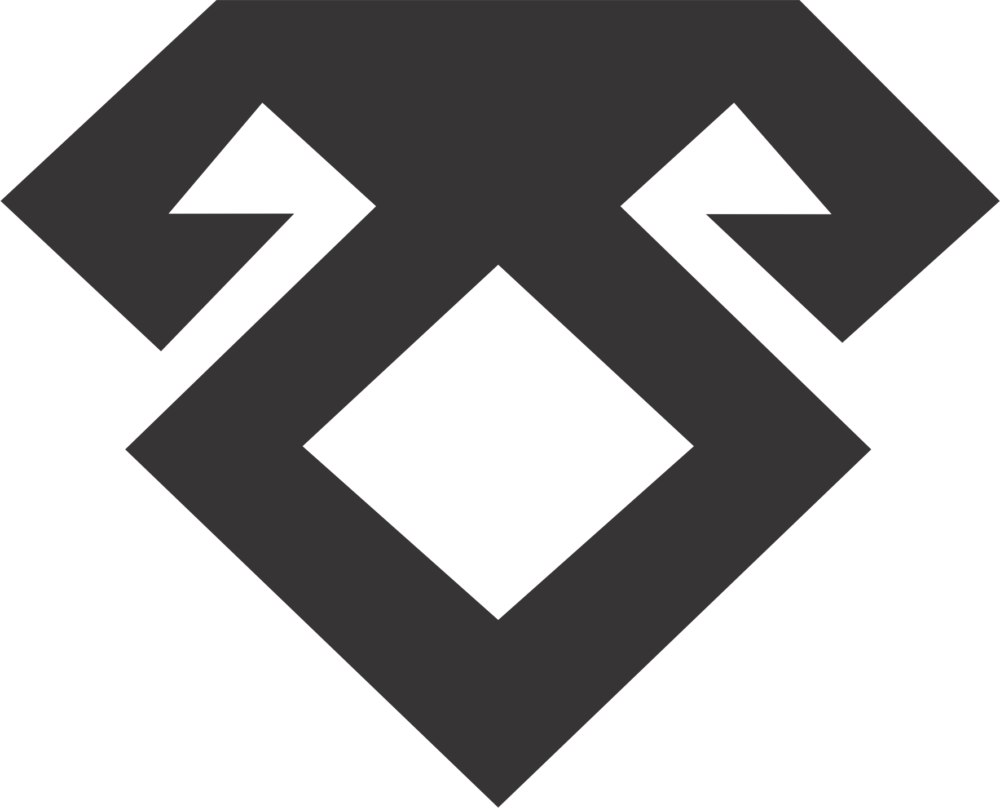

شاخ قوچ

شاخ قوچ در اساطیر ایران زمین نمادی از قدرت و شجاعت است. قوچ، حیوان مقدس آریاییها، به عنوان نماد خدای جنگ، بهرام (ورثرغنه)، شناخته میشد. گفته میشود که شاخهای قوچ دارای نیرویی ماورایی بودند که به صاحب آن قدرت شکستناپذیری میدادند. این نماد در افسانه ها تجسمی است از استقامت و قدرت روح انسان در مواجهه با سختیها.


Scan to view more details: